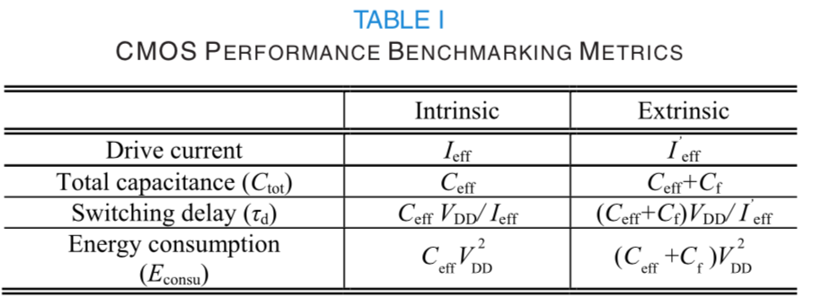
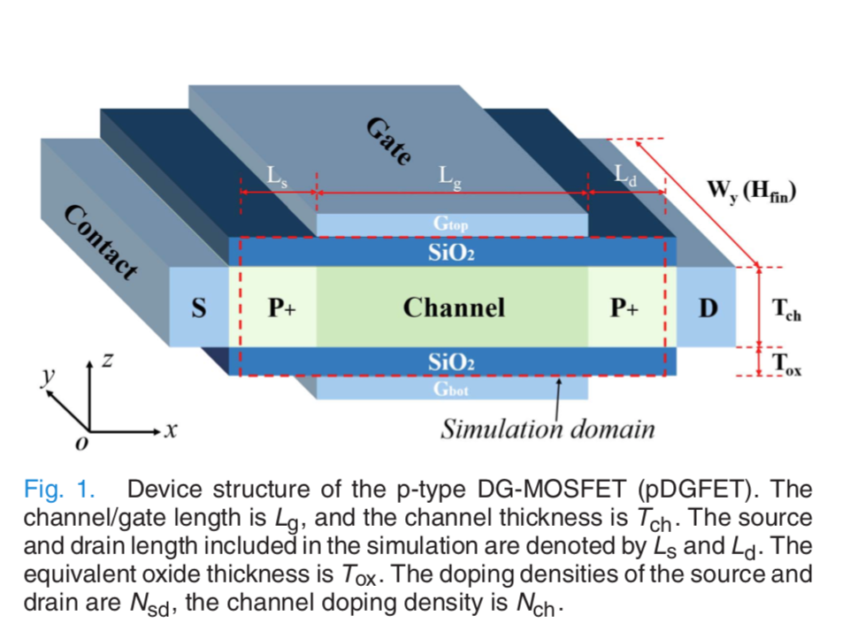

Si Double-Gate pMOSFETs
Abrstract
对栅极长度$Lg$ = 14,10和7 $nm$的超薄体硅双栅极pMOSFET进行了全面的量子输运研究。…发现在长和短沟道长度下晶体取向对驱动电流的影响是显着的，而在$Lg$ = 7nm时，它对有效电容的影响更明显。同时，有效电容不仅取决于状态密度，还受限于受限方向上孔洞分布的影响。内在和外在性能评估表明，（001）/ [100]和（110）/ [001]是$Lg$ = 7 nm时的最佳限制/传输晶体取向配置，而（110）/ [110]和（ 110）/ [111]是较长栅极长度的最佳选择。随着Lg的缩小，内部和外部性能在缩放的体厚下都会更好。
I. DEVICE STRUCTURE AND METHODOLOGY
A. Device Structure
为了降低仿真成本，将3-D FinFET结构简化为准2-D结构，如图1所示。它沿z轴（鳍宽度方向）被限制，并且空穴传输沿着 x轴（通道方向）。 沿y轴（翅片高度方向）的问题被视为周期性的。 为了表示器件尺寸朝向比例限制，我们选择$Lg$ = 14,10和7 nm，并分别选择$Tch$ = 3,4和5 nm。 另外，我们设置Ls = Ld = 8nm，并且Tox = 1nm。 源极和漏极是p型掺杂的，$N_{sd} = 1×10^{20}cm^{-3}$，沟道是n型掺杂的，$N_{sd} = 1×10^{15}cm^{-3}$。
B. CMOS Performance Metrics

\
$I_{eff}$是[29]定义的有效逆变器驱动电流，涉及低或中漏极电压特性。 类似地，Ceff表示给定电源电压（$V_{DD}$）的平均沟道电容，其中包括[17]中定义的米勒效应，它基于电容的一般定义和[30]中MOS电容的讨论。 这里，我们假设n型FET的性能与p型FET对称。\
对于没有任何寄生成分的固有情况,
$$
I_{eff} = (I_{H}+I_{L})/2(1)
$$
其中，
$$
I_{H} = I_{D}（V_{G} = V_{DD}，V_{D} = V_{DD} / 2）（2a）
$$
$$
I_{L} = I_{D}（V_{G} = V_{DD} / 2，V_{D} = V_{DD}）（2b）
$$
$$
C_{eff} = (Q_{G}^{ON}-Q_{G}^{OFF})/V_{DD} (3)
$$
$$
Q_{G}^{ON} = Q_{G}(V_{G}=V_{DD},V_{D}=0)(4a)
$$
$$
Q_{G}^{OFF} = Q_{G}(V_{G}=0,V_{D}=V_{DD})(4b)
$$
其中$Q_{G}$是从沟道中的空穴密度积分获得的总栅极电荷。
对于外在情况，包括寄生效应。 为了描述由寄生电阻引起的电流减小，重新调整的有效电流表示为[31]
$$
I’{eff} = (I’{H}+I’{L})/2 (5)
$$
$$
I’{H,L}=I’{H.L}/(1+R{SD}/R_{H,L})(6)
$$
其中$R_{SD}$是寄生电阻，包括源极和漏极元件，以及
$$
R_{H,L}=V_{DD}/I_{H,L}(7)
$$
总电容由$C_{eff}$和$C_{f}$贡献，它们被视为并联连接。 $C_{f}$是总栅极边缘电容，包括栅极 - 源极/漏极和栅极 - 延伸分量，根据2015 ITRS [32]，其最大值是氧化物电容的两倍。 参考ITRS路线图，我们使用每个节点的$R_{SD}$和$C_{f}$目标（信道长度）进行评估，这与UTB厚度无关，它们列在表II中。
II.Conclusion
在本文中，使用精确的量子传输模拟完成了对UTB Si pDGFET的缩放限制的全面研究。根据各种沟道长度，体厚和晶体取向组合计算和分析I-V和C-V特性以及内在和外在能量延迟性能。以下是一些关键结论。
1）较长栅极长度的ION主要由ON状态平均弹道空穴速度决定，而在$Lg$ = 7 nm时，SDT比率的计算清楚地表明了这种SDT效应与ION和SS的相关性，即强SDT结果在退化的SS中，因此ION更小。\
2）根据包含在哈密顿量中的包含潜在信息的带结构计算的DOS可以很好地解释Ceff从NEGF模拟得到的结果。\
3）Ceff可以作为量子电容和静电电容的串联组合来处理。在Lg = 7nm时，Ceff由量子分量控制，而在较长的栅极长度，其值受量子和静电分量的影响。\
4）CMOS基准测量指标，包括开关延迟和能耗，与器件的I-V和C-V特性密切相关。此外，它们通过寄生效应显着增加。\
5）在内在和外在的情况下，当Lg缩小到7nm时，Tch也应该减小，这意味着应该加强量子限制。\
6）在Lg = 7nm时，晶体取向配置的影响变得占主导地位，特别是在大Tch和包括寄生效应时。为了改善这种短门情况下的器件性能，应首先考虑（001）/ [100]和（110）/ [001]，尽管（110）/ [1̄10]和（110）/ [1̄11]是Lg = 10和14 nm时的最佳取向配置。\